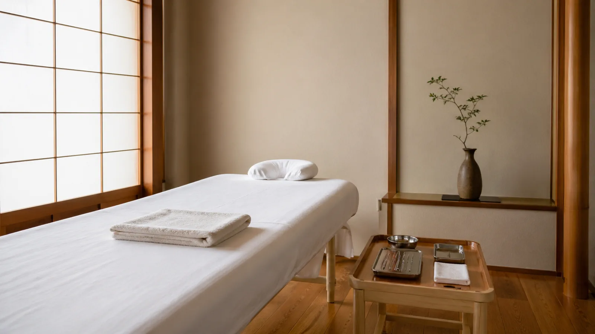
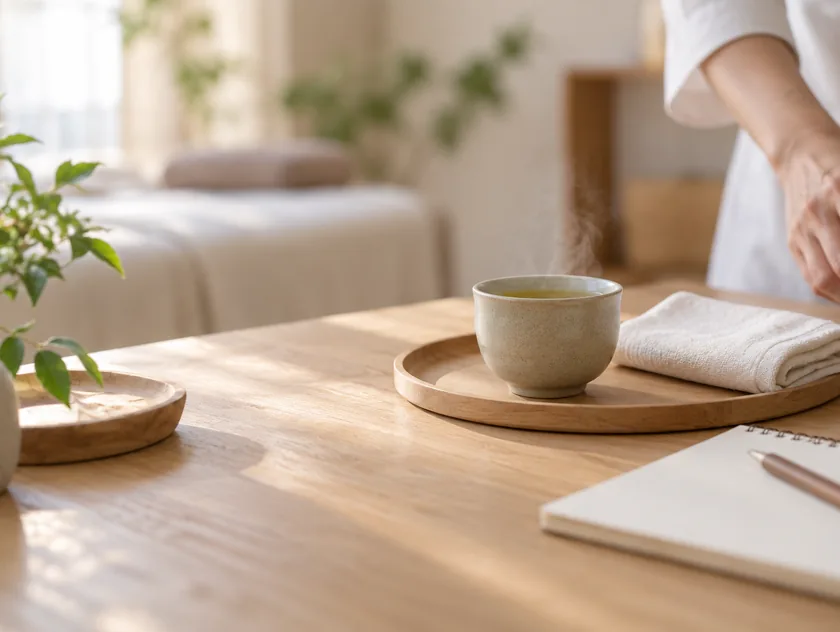
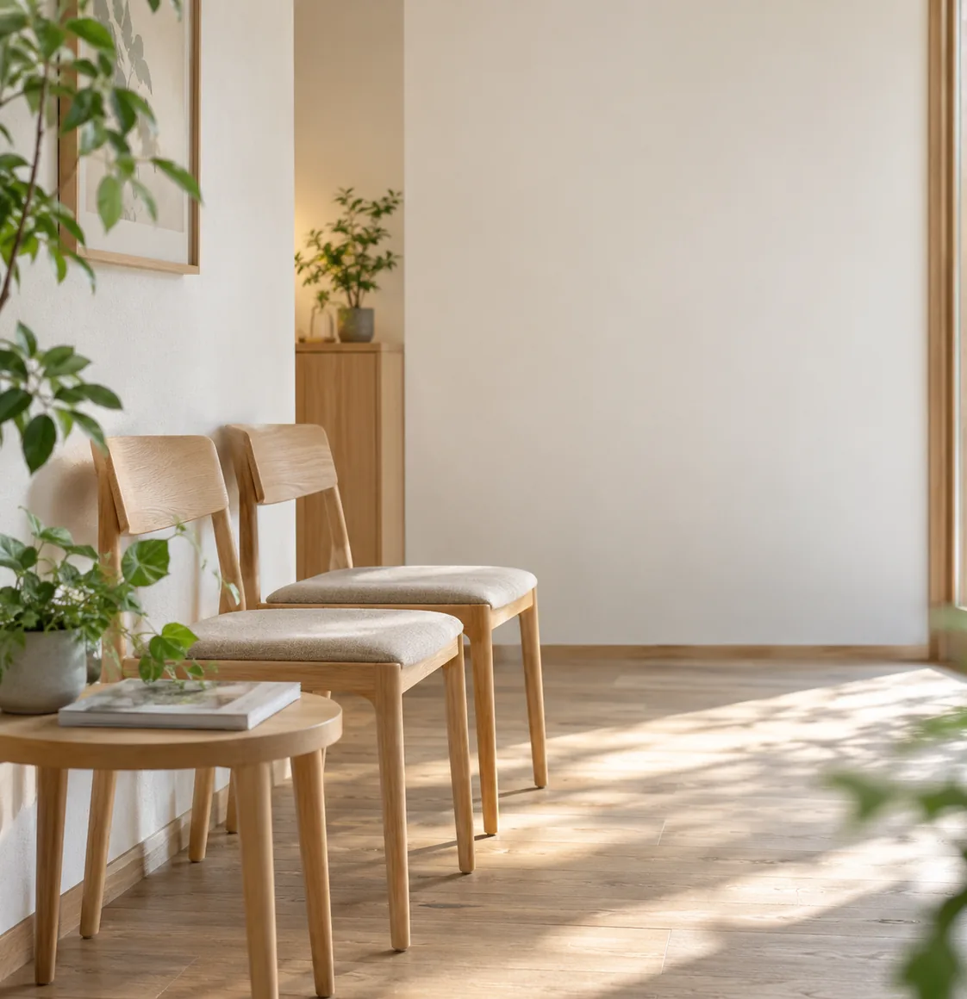

初めての方へ
First Visit初回は、問診と脈診にお時間をいただきます。どんな順で進み、どのくらいかかり、何を持っていけばよいのか。ご来院の前に知っておいていただきたいことを、このページにまとめました。

ご来院から、
お帰りまで。The Flow
初めてのご来院では、次の順にお進みいただきます。お着替えと問診票のご記入を含め、90分ほどをみておいてください。
初回トータル所要時間：約90分
-
ご予約オンライン or お電話
ご都合の良い日時をお選びください。
-
初回問診30分
お悩みとご経歴を丁寧にお伺いします。

-
脈診・触診10分
東洋医学的に体の状態を読み取ります。

-
鍼施術40分
痛みのない繊細な鍼で整えます。

-
アフターケア10分
セルフケアのご提案をいたします。

所要時間と料金
- 初回の所要時間
- 約90分（問診30分／脈診・触診10分／鍼施術40分／アフターケア10分）
お着替えと問診票のご記入の時間を含みます。2回目以降は約60分です。
- 料金
- 初回 ¥9,800（税込）／2回目以降 ¥7,800（税込）
健康保険の適用外です。回数券（5回 ¥36,000）もご用意しています。
- お支払い方法
- 現金・各種クレジットカード・電子マネーがご利用いただけます。
領収書が必要な方は、受付でお申し付けください。
持ち物・服装
- 持ちもの
- 特別なご準備は必要ありません。お薬手帳や検査結果をお持ちの方は、ご持参いただけると参考になります。
健康保険証は不要です。
- 服装
- そのままの服装でお越しいただけます。上下の着替えを無料でご用意していますので、お仕事帰りでもご心配はいりません。
- ご来院の時間
- ご予約時刻の5分前を目安にお越しください。
初回は問診票のご記入をお願いしています。
- お子さま連れ
- ベビーカーのまま院内にお入りいただけます。ご予約の際にお知らせいただければ、落ち着いた時間帯をご案内します。

院内のご案内
受付でお名前を伺い、待合スペースでお待ちいただきます。施術室は扉で仕切られた個室ですので、ほかの方と顔を合わせることはありません。
院内は土足のままお入りいただけます。お手洗いは施術室の隣にございます。エレベーターは建物の1階、入口を入ってすぐ右手です。
院内配置図｜○○ビル 2F
よくあるご質問
髪の毛より細い鍼を使用しており、刺入時の痛みはほとんど感じません。鍼が初めての方も安心してお受けいただけます。
症状によって異なりますが、初回は週1回ペースを目安にご相談しています。改善とともに通院間隔を空けていきます。「週3回」のような押し付けはいたしません。
自律神経専門の施術は保険適用外となります。詳しくは料金欄をご確認ください。
症状の重さや経過年数によって異なります。
3〜6か月の通院で変化を実感される方が多いですが、お一人ずつ状態が違うため、初回の問診で目安をお伝えします。
3〜6か月の通院で変化を実感される方が多いですが、お一人ずつ状態が違うため、初回の問診で目安をお伝えします。
問題ございません。現在の服薬状況を伺った上で施術いたします。薬を否定したり、急に減らすようご提案することはありません。
院長（男性）が施術を担当しております。
女性スタッフによる施術をご希望の場合は、ご予約時にご相談ください。
女性スタッフによる施術をご希望の場合は、ご予約時にご相談ください。